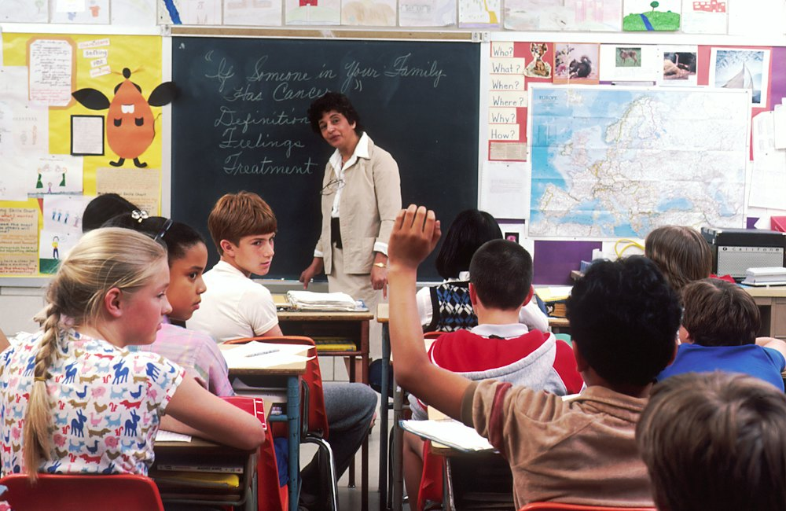

Accueil › Conseils › Harcèlement scolaire : repérer les signes et agir
Harcèlement scolaire : repérer les signes et agir
Un élève sur dix environ serait concerné par le harcèlement au cours de sa scolarité. Les enfants en parlent rarement d'eux-mêmes : c'est souvent aux parents de repérer les signaux.

Qu'est-ce que le harcèlement ?
Ce sont des violences (moqueries, insultes, exclusion, coups, rumeurs, messages humiliants) répétées, par un ou plusieurs élèves, contre un enfant qui n'arrive pas à se défendre. Quand il se poursuit sur les téléphones et les réseaux sociaux, on parle de cyberharcèlement : il suit alors l'enfant jusqu'à la maison. En France, le harcèlement scolaire est un délit depuis 2022.
Les signes d'alerte
- Il ne veut plus aller à l'école, a mal au ventre ou à la tête le matin.
- Ses résultats baissent brutalement.
- Il revient avec des affaires abîmées, perdues, des bleus inexpliqués.
- Il ne parle plus de ses copains, n'est plus invité, s'isole.
- Il dort mal, mange moins, devient irritable ou triste.
- Il est anxieux quand il reçoit un message, ou supprime ses comptes.
Que faire ?
- L'écouter et le croire, sans minimiser (« ce n'est rien ») ni dramatiser devant lui. Dites-lui qu'il a bien fait de parler et que ce n'est pas sa faute.
- Ne pas aller régler les comptes vous-même avec l'élève ou ses parents : cela aggrave souvent la situation.
- Prévenir l'école rapidement (enseignant, CPE, directeur) et demander un rendez-vous. Les établissements ont un protocole de traitement du harcèlement.
- Garder des preuves : captures d'écran des messages, dates, noms des témoins.
- Appeler le 3018 : gratuit, anonyme, 7 jours sur 7, par téléphone, tchat ou l'appli 3018. Pour le cyberharcèlement, il peut aider à faire supprimer des contenus.
- Prendre soin de lui : activités où il se sent bien, autres cercles d'amis, et un suivi psychologique si besoin.
Pour en parler en famille
Jeu de cartes pour parler des émotions
Pour aider un enfant à exprimer ce qu'il vit.
Voir les prix sur AmazonLiens affiliés Amazon : une petite commission pour le site, sans surcoût pour vous.